Clínica odontológica · Pituba, Salvador
Implantes, próteses e cuidado com o seu sorriso.
Atendimento odontológico na Pituba, em Salvador, com uma equipe de diferentes áreas, orientação clara e planejamento individual para cada paciente.
Responsável técnico: Dr. Alfredo Nelli · CRO-BA 3336
Tratamentos
O que você encontra na clínica
Uma visão geral, em linguagem simples, dos principais atendimentos. A indicação de cada tratamento é feita somente após avaliação na consulta.
Ficou com alguma dúvida sobre como funciona um atendimento?
Tirar dúvidas pelo WhatsApp-
Implantes dentários
Repõem dentes ausentes com uma raiz artificial fixada no osso, sobre a qual é instalada a coroa. A indicação depende da avaliação do osso e da saúde bucal de cada paciente.
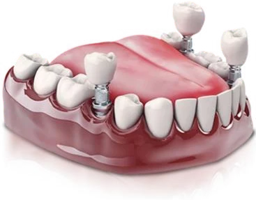
-
Próteses
Repõem dentes e estruturas perdidas para recuperar a mastigação, a fala e a aparência. Podem ser fixas, removíveis ou apoiadas sobre implantes. A clínica tem laboratório odontológico próprio.
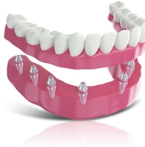
-
Facetas
Lâminas finas de resina ou porcelana aplicadas na frente dos dentes para ajustar cor, formato ou pequenas imperfeições.
-
Clareamento dental
Uso de gel clareador, com apoio de laser, para clarear a cor dos dentes. A intensidade é definida com o paciente após a avaliação.
-
Alinhadores transparentes (Invisalign)
Placas transparentes feitas sob medida que movimentam os dentes aos poucos, como alternativa ao aparelho fixo.
-
Harmonização orofacial
Procedimentos voltados ao equilíbrio estético e funcional da face, planejados de forma individual.
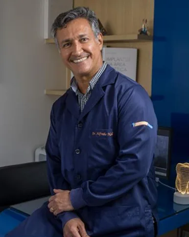
Sobre
Implante Master
A clínica foi fundada pelo Dr. Alfredo Nelli, cirurgião-dentista com mais de 35 anos de atuação, que é o responsável técnico e coordena uma equipe de profissionais de diferentes áreas. Cada atendimento começa por uma avaliação individual, para que você entenda as opções indicadas para o seu caso antes de decidir.
- Responsável técnico
- Dr. Alfredo Nelli · CRO-BA 3336
- Registro da clínica
- CRO-BA 3350
- Áreas da equipe
- Implantes, prótese dentária, endodontia (tratamento de canal) e reabilitação orofacial
Equipe
-
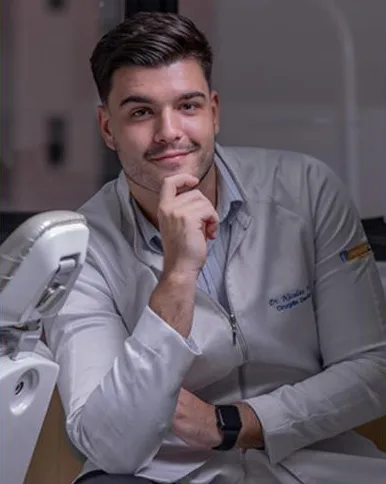
Dr. Nicolas Nelli
Cirurgião-dentista · Prótese dentária
CRO-BA 21609
-
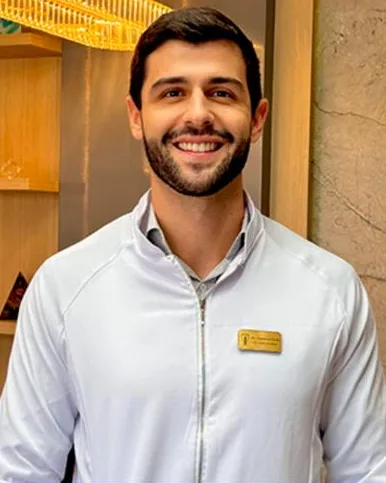
Dr. Gustavo Nelli
Endodontia (tratamento de canal)
CRO-BA 29965
-
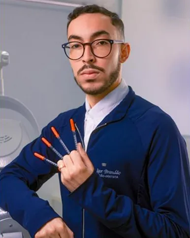
Dr. Igor Brandão
Cirurgião-dentista · Reabilitação orofacial
CRO-BA 20388
Como funciona
Do primeiro contato ao plano de tratamento
-
Agendamento
Você chama pelo WhatsApp e combinamos o melhor dia e horário para a consulta.
-
Consulta e avaliação individual
Na consulta, conversamos sobre o que motivou sua visita e é feita a avaliação clínica.
-
Planejamento e próximos passos
Você recebe explicações sobre as opções indicadas para o seu caso e tira suas dúvidas antes de decidir.
Pelo WhatsApp, respondemos dúvidas sobre agendamento. Diagnóstico e indicação de tratamento acontecem somente na consulta.
Estrutura
A clínica
A Implante Master fica no Edf. Memorial Itaigara, na Pituba, e conta com laboratório odontológico próprio e exames de imagem feitos no próprio consultório.
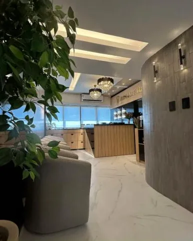
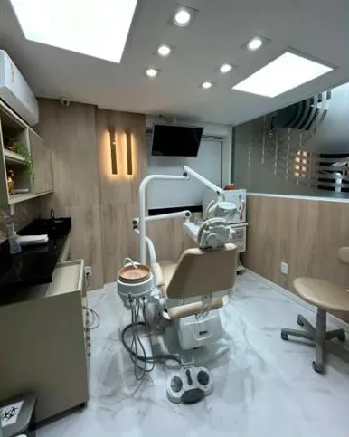
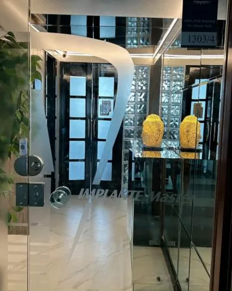
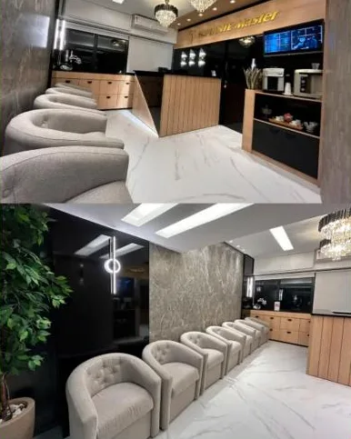
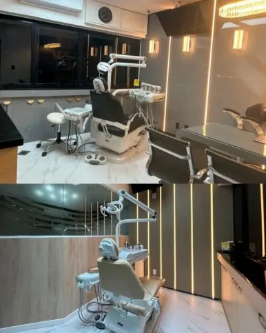
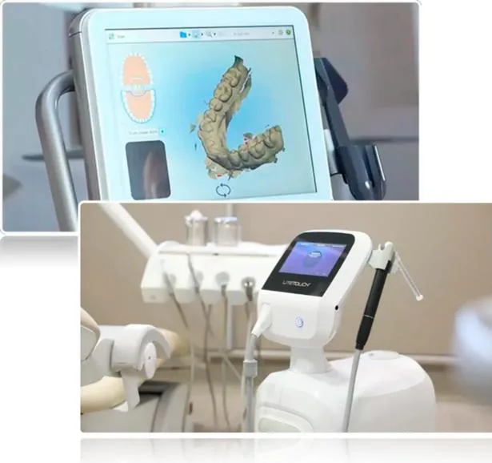
-
Localização
Edf. Memorial Itaigara, Rua Altino Serbeto de Barros, 241, Pituba.
-
Laboratório próprio
A clínica tem laboratório odontológico próprio para o trabalho com próteses.
-
Exames e fluxo digital
Scanner intraoral, que registra os dentes em imagem digital, e documentação radiológica no próprio consultório.
-
Apoio nos procedimentos
Suporte de anestesista, bomba infusora de anestésico e laser pós-cirúrgico, quando indicados.
Dúvidas
Perguntas frequentes
Como faço para agendar uma consulta?
Pelo WhatsApp. Basta tocar em “Agendar pelo WhatsApp”: a conversa abre com uma mensagem pronta, e a equipe combina o dia e o horário com você.
Como é a primeira consulta?
Conversamos sobre o motivo da sua visita e é feita a avaliação individual. Depois, você recebe explicações sobre os próximos passos indicados para o seu caso.
Posso receber uma indicação de tratamento pelo WhatsApp?
Não. Pelo WhatsApp a equipe tira dúvidas sobre agendamento e funcionamento da clínica. A indicação de qualquer tratamento depende de avaliação presencial.
Onde fica a clínica?
No Edf. Memorial Itaigara, na Rua Altino Serbeto de Barros, 241, Pituba, em Salvador.
Quais são os horários de atendimento?
Segunda a sexta, das 8h às 18h.
Quais formas de pagamento são aceitas?
Fale com a equipe pelo WhatsApp para saber as formas de pagamento disponíveis.
Localização
Onde estamos
-
Endereço
Edf. Memorial Itaigara
Ver rota no Google Maps
Rua Altino Serbeto de Barros, 241
Pituba, Salvador – BA -
Horário de atendimento
Segunda a sexta, das 8h às 18h.
-
Telefone e WhatsApp
-
Instagram
Vamos marcar sua avaliação?
Mande uma mensagem e a equipe combina o melhor horário para você. Se tiver dúvidas sobre o atendimento, é só perguntar.
Agendar pelo WhatsAppA conversa abre com uma mensagem pronta, que você pode editar antes de enviar.